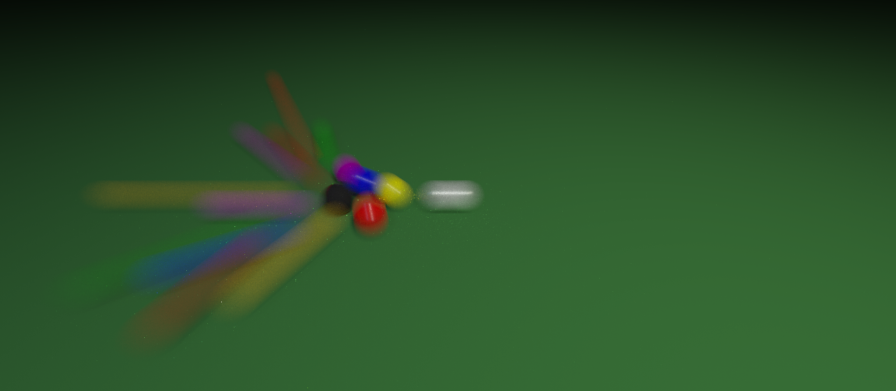

Figure 1: Spheres with increasing velocities, rendered with 64 samples per pixel and 32 samples per time step.
Figure 2: An 8 ball pool scene, rendered with a 'long exposure' effect.
Figure 3: A video demonstrating the motion blur effect in action.
This page showcases the images and video produced by my final project renderer. I implemented motion blur as well as video rendering which renders each frame with motion blur as well. In addition, I implemented perlin noise to see if I could procedurely emulate the texture of a green felt pool table, although that ended up looking not as clean as the base pool table when rendered with video. This renderer supports keyframing the camera position and orientation for animation video, and allows for varying degrees of blur, enabling the rendering of "long exposure" types of images.